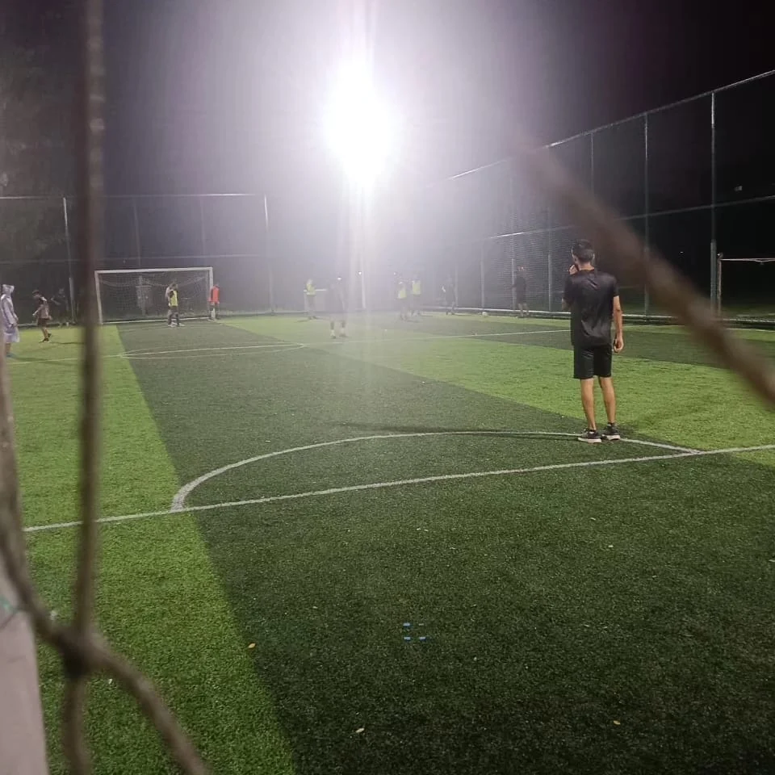
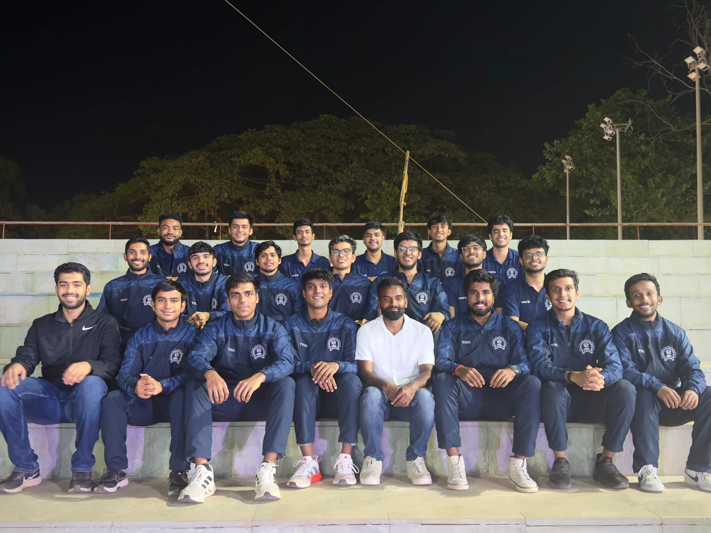
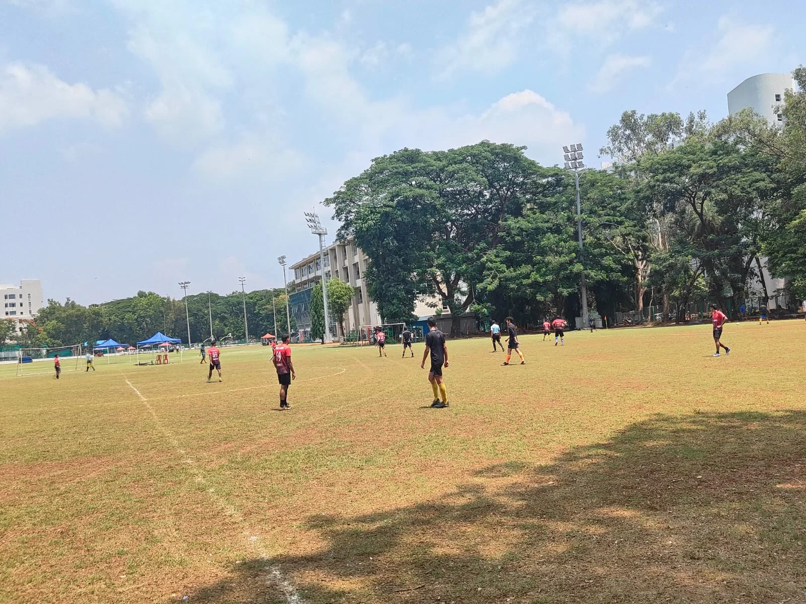

The full game.
The main grass ground sits in the Gymkhana, beside the cricket oval. There’s room for the full 11-a-side game, inter-hostel competition and institute training.
Find the groundFrom a game with friends on the turf to representing your hostel on the ground, football at Bombay has more than one starting point.
Find a place to play, discover a competition, or get in touch about training. The next team you play with could be just around the corner.
Talk to the football secretaryTwo playing spaces.
Two ways to make the game yours.
The main grass ground sits in the Gymkhana, beside the cricket oval. There’s room for the full 11-a-side game, inter-hostel competition and institute training.
Find the ground
The artificial-grass turf brings smaller teams into a tighter space. It’s the setting for the 6-a-side format described by IIT Bombay Sports.
Check current access and booking arrangements with the sports office before making plans.
Ask about accessThe institute’s football information describes training equipment, an equipment shed with drinking water, and ice-pack storage. Ask the team about equipment and arrangements for your session.
A first tournament, a hostel rivalry, a league with friends. There’s more than one way to get involved.
These are the activities listed by IIT Bombay Sports. Contact the team for current dates, entry details and eligibility.
A starting point for first-year students. Football NSO offers structured training through the National Sports Organization scheme. Ask about current selection, eligibility and session times.
A first competitive platform for freshmen, with 11-a-side football and a chance to put skills from training and informal play into practice.
The inter-hostel General Championship brings hostel teams together in an 11-a-side competition. Speak to your hostel sports representative about taking part.
An institute tournament built around the compact 6-a-side format. Smaller teams and a smaller surface make for a close, fast-paced game.
A league format described by the institute as involving students, research scholars and professors, with opportunities to participate as players and team managers.
The football community also follows the game through a Fantasy League on the FPL platform. Contact the team to find out about the current edition.
Results preserved in the institute’s archive.
A few moments from the team’s history.
2025
Bronze
2023
Silver
2022
Bronze
The main ground is beside the cricket oval. The artificial-grass turf is just above it in this campus view.
Explore the sporting campusIIT Bombay Gymkhana, Powai.
Ask about training, casual play, current competitions, and finding your place in the team.
Contact the sports office
The ground, the turf,
and the people in between.

Another way to play
Hockey ↗